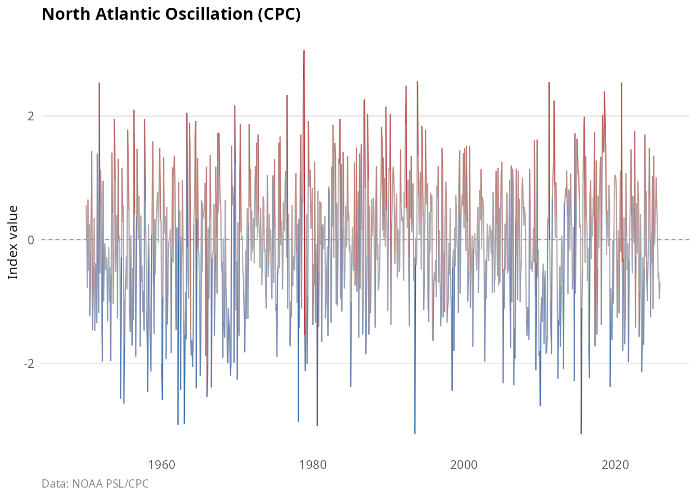
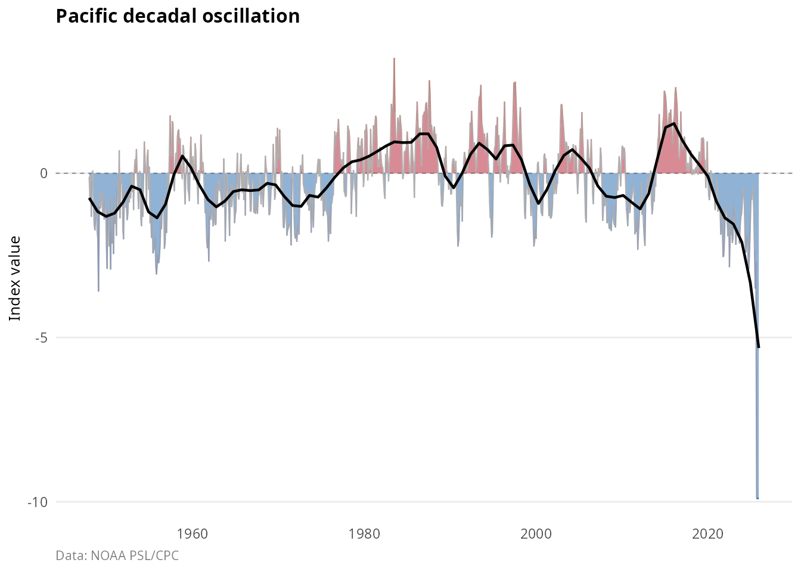
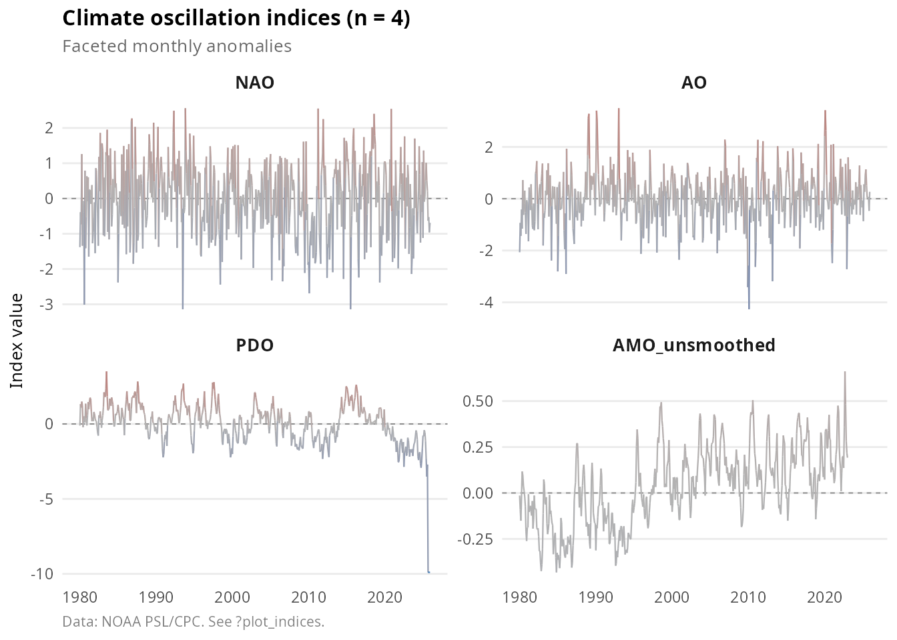
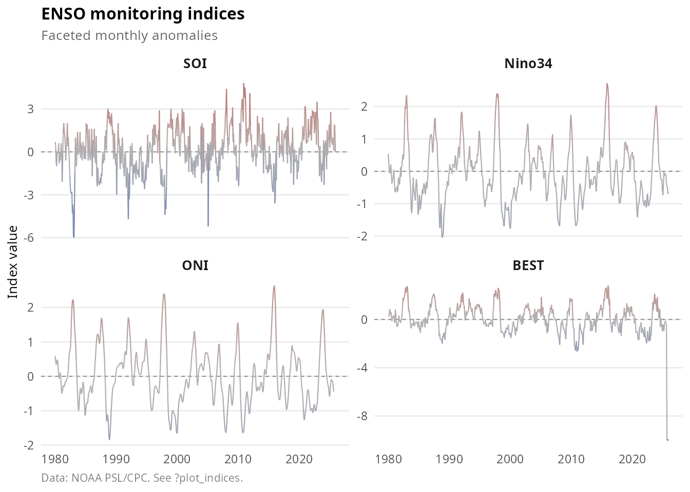
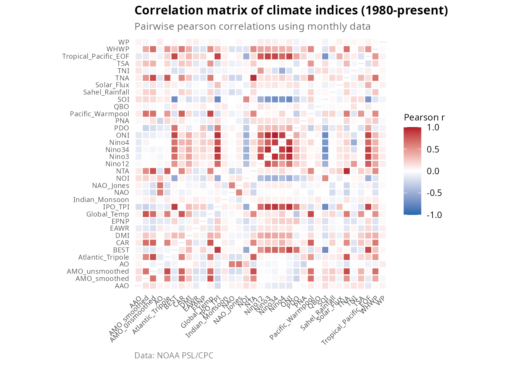
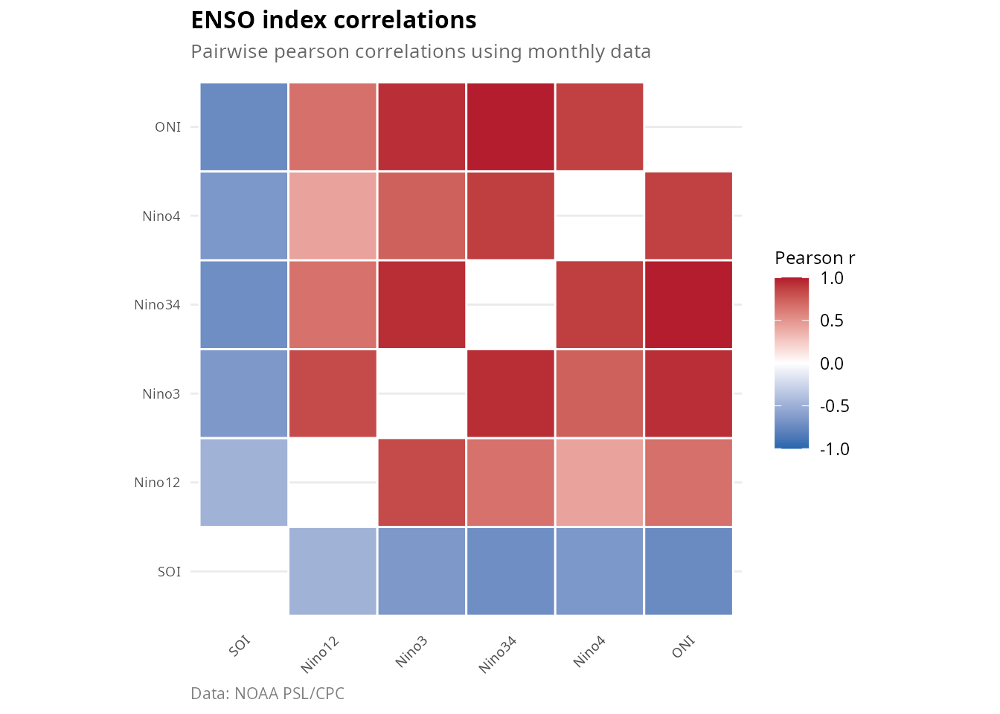
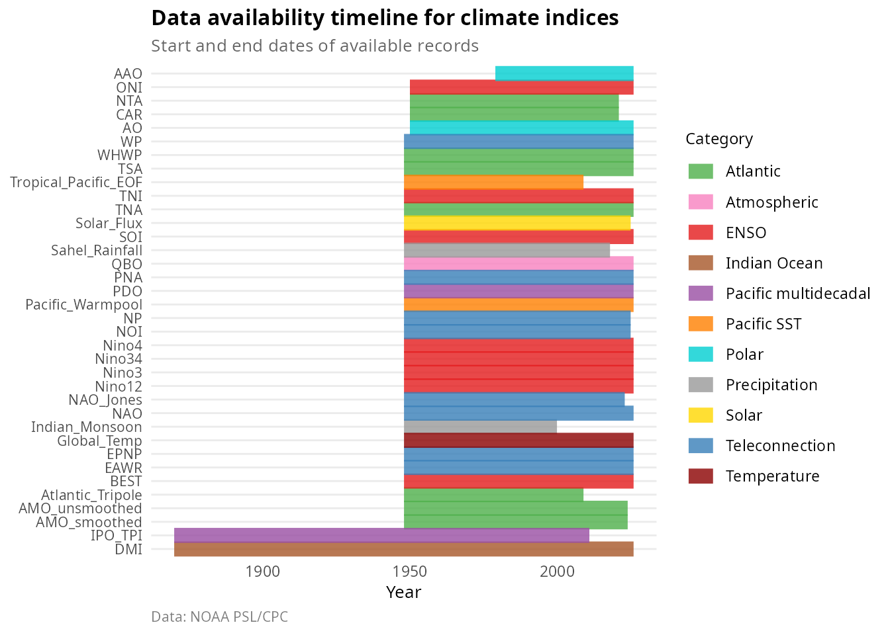
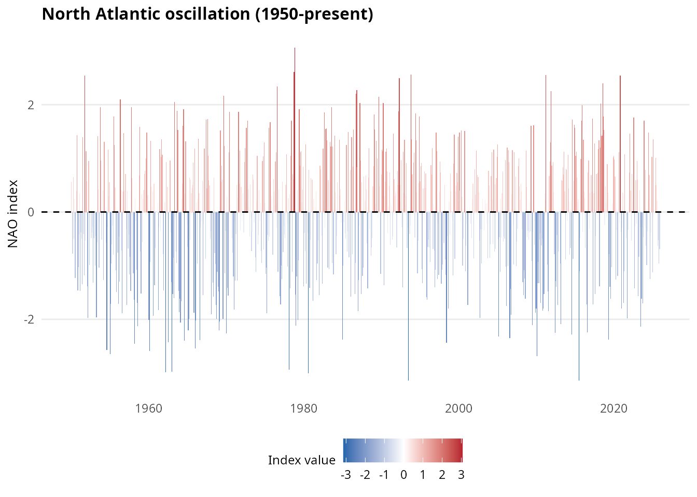

User guide: accessing and visualizing climate indices
Pablo Almaraz, RElab
2026-04-26
Source:vignettes/oscillatoRs-user-guide.Rmd
oscillatoRs-user-guide.RmdIntroduction
The oscillatoRs package provides access to 43 planetary climate oscillation indices from authoritative sources including NOAA Physical Sciences Laboratory (PSL) and Climate Prediction Center (CPC). The package includes pre-bundled datasets covering major climate modes; functions to download updated data directly from source; publication-quality visualization tools; and utilities for cross-index correlation analysis.
Installation
# From GitHub (development version)
# install.packages("devtools")
devtools::install_github("robustecologies/oscillatoRs")Quick start
Loading bundled data
The package includes pre-bundled datasets that can be loaded immediately:
# Monthly indices (long format)
data(climate_monthly)
# Check available indices
unique(climate_monthly$index)
#> [1] "AAO" "AMO_smoothed" "AMO_unsmoothed"
#> [4] "AO" "Atlantic_Tripole" "BEST"
#> [7] "CAR" "DMI" "EAWR"
#> [10] "EPNP" "Global_Temp" "IPO_TPI"
#> [13] "Indian_Monsoon" "NAO" "NAO_Jones"
#> [16] "NOI" "NP" "NTA"
#> [19] "Nino12" "Nino3" "Nino34"
#> [22] "Nino4" "ONI" "PDO"
#> [25] "PNA" "Pacific_Warmpool" "QBO"
#> [28] "SOI" "Sahel_Rainfall" "Solar_Flux"
#> [31] "TNA" "TNI" "TSA"
#> [34] "Tropical_Pacific_EOF" "WHWP" "WP"| date | year | month | value | index | description | category | source_url |
|---|---|---|---|---|---|---|---|
| 1979-01-01 | 1979 | 1 | 0.209 | AAO | Antarctic Oscillation | Polar | https://psl.noaa.gov/data/correlation/aao.data |
| 1979-02-01 | 1979 | 2 | 0.356 | AAO | Antarctic Oscillation | Polar | https://psl.noaa.gov/data/correlation/aao.data |
| 1979-03-01 | 1979 | 3 | 0.899 | AAO | Antarctic Oscillation | Polar | https://psl.noaa.gov/data/correlation/aao.data |
| 1979-04-01 | 1979 | 4 | 0.678 | AAO | Antarctic Oscillation | Polar | https://psl.noaa.gov/data/correlation/aao.data |
| 1979-05-01 | 1979 | 5 | 0.724 | AAO | Antarctic Oscillation | Polar | https://psl.noaa.gov/data/correlation/aao.data |
| 1979-06-01 | 1979 | 6 | 1.700 | AAO | Antarctic Oscillation | Polar | https://psl.noaa.gov/data/correlation/aao.data |
Listing available indices
Use list_indices() to see all available indices with
their descriptions:
indices <- list_indices()
knitr::kable(indices[1:15, ], caption = "Sample of available indices")| index | description | category | resolution |
|---|---|---|---|
| NAO | North Atlantic Oscillation (CPC) | Teleconnection | monthly |
| NAO_Jones | North Atlantic Oscillation (Jones/CRU) | Teleconnection | monthly |
| PNA | Pacific North American Index | Teleconnection | monthly |
| WP | Western Pacific Index | Teleconnection | monthly |
| EPNP | East Pacific/North Pacific Oscillation | Teleconnection | monthly |
| EAWR | Eastern Atlantic/Western Russia | Teleconnection | monthly |
| NP | North Pacific Pattern | Teleconnection | monthly |
| NOI | Northern Oscillation Index | Teleconnection | monthly |
| PDO | Pacific Decadal Oscillation | Pacific multidecadal | monthly |
| IPO_TPI | Tripole Index for Interdecadal Pacific Oscillation | Pacific multidecadal | monthly |
| SOI | Southern Oscillation Index | ENSO | monthly |
| Nino12 | Nino 1+2 SST Anomaly (0-10S, 90W-80W) | ENSO | monthly |
| Nino3 | Nino 3 SST Anomaly (5N-5S, 150W-90W) | ENSO | monthly |
| Nino34 | Nino 3.4 SST Anomaly (5N-5S, 170-120W) | ENSO | monthly |
| Nino4 | Nino 4 SST Anomaly (5N-5S, 160E-150W) | ENSO | monthly |
Filter by category or resolution:
# ENSO indices only
enso <- list_indices(category = "ENSO")
knitr::kable(enso, caption = "ENSO-related indices")| index | description | category | resolution |
|---|---|---|---|
| SOI | Southern Oscillation Index | ENSO | monthly |
| Nino12 | Nino 1+2 SST Anomaly (0-10S, 90W-80W) | ENSO | monthly |
| Nino3 | Nino 3 SST Anomaly (5N-5S, 150W-90W) | ENSO | monthly |
| Nino34 | Nino 3.4 SST Anomaly (5N-5S, 170-120W) | ENSO | monthly |
| Nino4 | Nino 4 SST Anomaly (5N-5S, 160E-150W) | ENSO | monthly |
| ONI | Oceanic Nino Index | ENSO | monthly |
| BEST | Bivariate ENSO Timeseries | ENSO | monthly |
| TNI | Trans-Nino Index | ENSO | monthly |
| MEI_v2 | Multivariate ENSO Index v2 (bimonthly) | ENSO | bimonthly |
# Daily indices
daily <- list_indices(resolution = "daily")
knitr::kable(daily, caption = "Daily indices")| index | description | category | resolution |
|---|---|---|---|
| NAO_daily | North Atlantic Oscillation (daily, 1950-present) | Teleconnection | daily |
| AO_daily | Arctic Oscillation (daily, 1950-present) | Polar | daily |
| PNA_daily | Pacific North American (daily, 1950-present) | Teleconnection | daily |
| AAO_daily | Antarctic Oscillation (daily, 1979-present) | Polar | daily |
Basic plotting
Create time series plots with plot_index():
plot_index(climate_monthly, "NAO")
Add smoothing and fill anomalies:
plot_index(
climate_monthly,
"PDO",
fill_anomaly = TRUE,
smooth = 0.1,
title = "Pacific decadal oscillation"
)
Downloading indices
Multiple indices
Download several indices at once:
# Download specific indices
selected <- get_indices(names = c("NAO", "AO", "PDO"))
# Download all ENSO indices
enso_data <- get_indices(category = "ENSO")
# Get wide format for correlation analysis
enso_wide <- get_indices(category = "ENSO", format = "wide")Index information
Get detailed metadata about any index:
info <- get_index_info("Nino34")
cat("Name:", info$name, "\n")
#> Name: Nino34
cat("Description:", info$description, "\n")
#> Description: Nino 3.4 SST Anomaly (5N-5S, 170-120W)
cat("Category:", info$category, "\n")
#> Category: ENSO
cat("Resolution:", info$resolution, "\n")
#> Resolution: monthly
cat("Start year:", info$start_year, "\n")
#> Start year: 1950Working with data
Long vs wide format
The bundled data comes in two formats:
Long format (climate_monthly): One row
per observation, ideal for ggplot2 and dplyr operations.
| date | year | month | value | index | description | category | source_url |
|---|---|---|---|---|---|---|---|
| 1948-01-01 | 1948 | 1 | NA | NAO | North Atlantic Oscillation (CPC) | Teleconnection | https://psl.noaa.gov/data/correlation/nao.data |
| 1948-02-01 | 1948 | 2 | NA | NAO | North Atlantic Oscillation (CPC) | Teleconnection | https://psl.noaa.gov/data/correlation/nao.data |
| 1948-03-01 | 1948 | 3 | NA | NAO | North Atlantic Oscillation (CPC) | Teleconnection | https://psl.noaa.gov/data/correlation/nao.data |
| 1948-04-01 | 1948 | 4 | NA | NAO | North Atlantic Oscillation (CPC) | Teleconnection | https://psl.noaa.gov/data/correlation/nao.data |
| 1948-05-01 | 1948 | 5 | NA | NAO | North Atlantic Oscillation (CPC) | Teleconnection | https://psl.noaa.gov/data/correlation/nao.data |
| 1948-06-01 | 1948 | 6 | NA | NAO | North Atlantic Oscillation (CPC) | Teleconnection | https://psl.noaa.gov/data/correlation/nao.data |
Wide format (climate_monthly_wide): One
column per index, ideal for correlation analysis.
| date | AAO | AMO_smoothed | AMO_unsmoothed | AO | Atlantic_Tripole |
|---|---|---|---|---|---|
| 1870-01-01 | NA | NA | NA | NA | NA |
| 1870-02-01 | NA | NA | NA | NA | NA |
| 1870-03-01 | NA | NA | NA | NA | NA |
| 1870-04-01 | NA | NA | NA | NA | NA |
| 1870-05-01 | NA | NA | NA | NA | NA |
| 1870-06-01 | NA | NA | NA | NA | NA |
Filtering data
Filter by index, category, or time period:
# Single index
nao <- climate_monthly[climate_monthly$index == "NAO", ]
# Category
enso <- climate_monthly[climate_monthly$category == "ENSO", ]
# Time period
recent <- climate_monthly[climate_monthly$year >= 2000, ]
# Combine filters
nao_recent <- climate_monthly[
climate_monthly$index == "NAO" & climate_monthly$year >= 1980,
]With dplyr:
Handling missing values
Check data completeness:
data(climate_summary)
knitr::kable(
climate_summary[, c("index", "start_year", "end_year", "pct_complete")][1:10, ],
caption = "Data completeness by index"
)| index | start_year | end_year | pct_complete |
|---|---|---|---|
| AMO_smoothed | 1948 | 2023 | 92.2 |
| AMO_unsmoothed | 1948 | 2023 | 98.8 |
| Atlantic_Tripole | 1948 | 2008 | 100.0 |
| CAR | 1950 | 2020 | 98.7 |
| NTA | 1950 | 2020 | 98.7 |
| TNA | 1948 | 2025 | 99.6 |
| TSA | 1948 | 2025 | 99.6 |
| WHWP | 1948 | 2025 | 99.6 |
| QBO | 1948 | 2025 | 100.0 |
| BEST | 1948 | 2025 | 100.0 |
Visualization
Multiple indices
Compare indices across time with plot_indices():
plot_indices(
climate_monthly,
indices = c("NAO", "AO", "PDO", "AMO_unsmoothed"),
start_year = 1980,
ncol = 2
)
ENSO family comparison
plot_indices(
climate_monthly,
indices = c("SOI", "Nino34", "ONI", "BEST"),
start_year = 1980,
title = "ENSO monitoring indices"
)
Correlation matrix
Visualize relationships between indices:
data(climate_monthly_wide)
# All indices
plot_correlation(climate_monthly_wide, start_year = 1980)
Focus on specific indices:
enso_cols <- c("SOI", "Nino12", "Nino3", "Nino34", "Nino4", "ONI")
plot_correlation(
climate_monthly_wide,
indices = enso_cols,
start_year = 1980,
title = "ENSO index correlations"
)
Data availability
Show temporal coverage of indices:
plot_availability(climate_monthly)
Custom visualizations
Build custom plots using the bundled data and theme functions:
library(ggplot2)
# Filter to NAO
nao <- climate_monthly[climate_monthly$index == "NAO" & climate_monthly$year >= 1950, ]
# Custom plot with anomaly colors
ggplot(nao, aes(x = date, y = value)) +
geom_col(aes(fill = value), width = 31) +
scale_fill_anomaly() +
geom_hline(yintercept = 0, linetype = "dashed") +
labs(
title = "North Atlantic oscillation (1950-present)",
x = NULL,
y = "NAO index"
) +
theme_climate()
Seasonal analysis
library(dplyr)
nao_seasonal <- climate_monthly |>
filter(index == "NAO") |>
mutate(
season = case_when(
month %in% c(12, 1, 2) ~ "Winter",
month %in% 3:5 ~ "Spring",
month %in% 6:8 ~ "Summer",
month %in% 9:11 ~ "Fall"
)
) |>
group_by(year, season) |>
summarise(value = mean(value, na.rm = TRUE), .groups = "drop")
ggplot(nao_seasonal, aes(x = year, y = value, color = season)) +
geom_line() +
facet_wrap(~season) +
theme_climate() +
labs(title = "NAO by season")Updating bundled data
To update the bundled datasets with the latest available data:
# Update to a temporary directory
update_indices(path = tempdir())
# Or specify your own path
update_indices(path = "my_data")Common workflows
ENSO monitoring
# Download latest ENSO indices
enso <- get_indices(category = "ENSO", format = "long")
# Plot recent ONI
oni <- enso[enso$index == "ONI" & enso$year >= 2020, ]
plot_index(oni, fill_anomaly = TRUE, title = "Oceanic Nino index (recent)")
# Check current ENSO state
latest <- oni[oni$date == max(oni$date), ]
cat("Latest ONI value:", latest$value, "as of", as.character(latest$date))Atlantic variability analysis
atlantic_indices <- c("AMO_unsmoothed", "TNA", "TSA", "NTA", "CAR")
atlantic <- get_indices(names = atlantic_indices, format = "wide")
# Correlation analysis
cor_matrix <- cor(atlantic[, -1], use = "pairwise.complete.obs")
print(round(cor_matrix, 2))Polar oscillations comparison
polar <- get_indices(names = c("AO", "AAO", "NAO"))
plot_indices(
polar,
start_year = 1979,
title = "Polar oscillation indices"
)Data sources and attribution
All data are sourced from:
- NOAA Physical Sciences Laboratory (PSL): https://psl.noaa.gov/
- NOAA Climate Prediction Center (CPC): https://www.cpc.ncep.noaa.gov/
When using this data in publications, please cite the original data sources and this package.
References
For detailed descriptions of individual indices and their physical
mechanisms, see the companion vignette:
vignette("climate-oscillations-theory", package = "oscillatoRs").